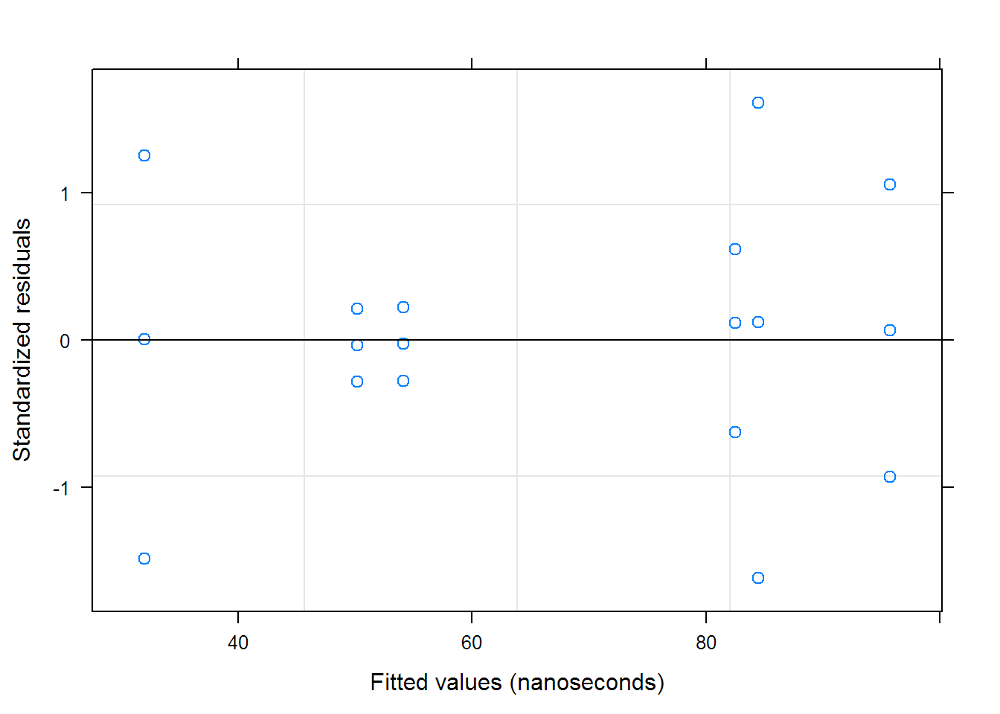
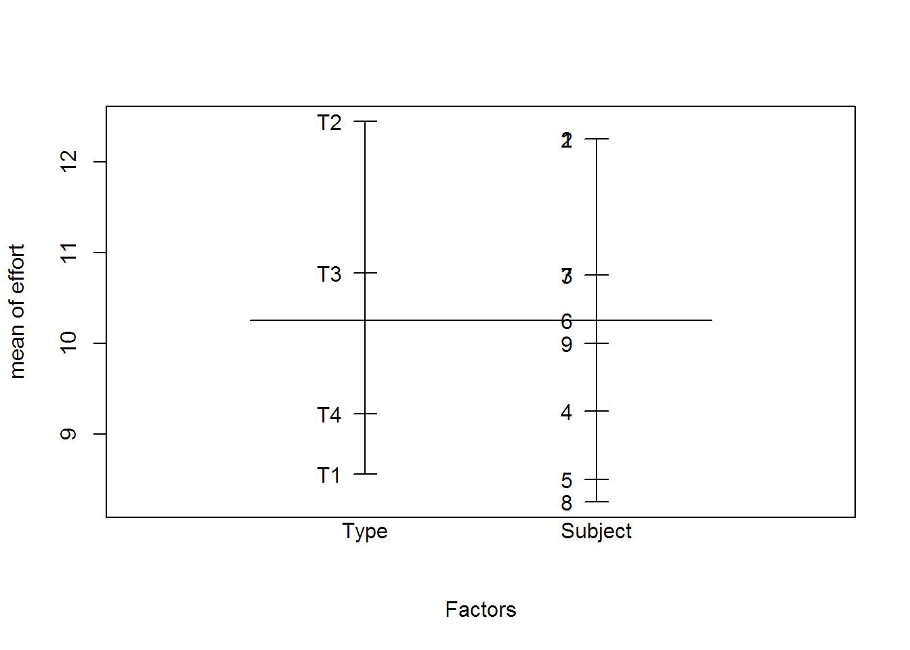
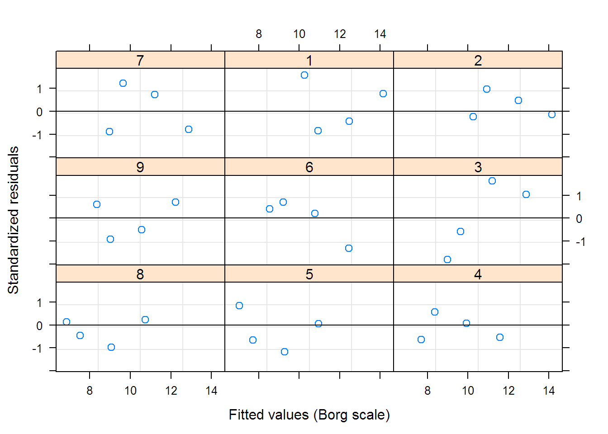
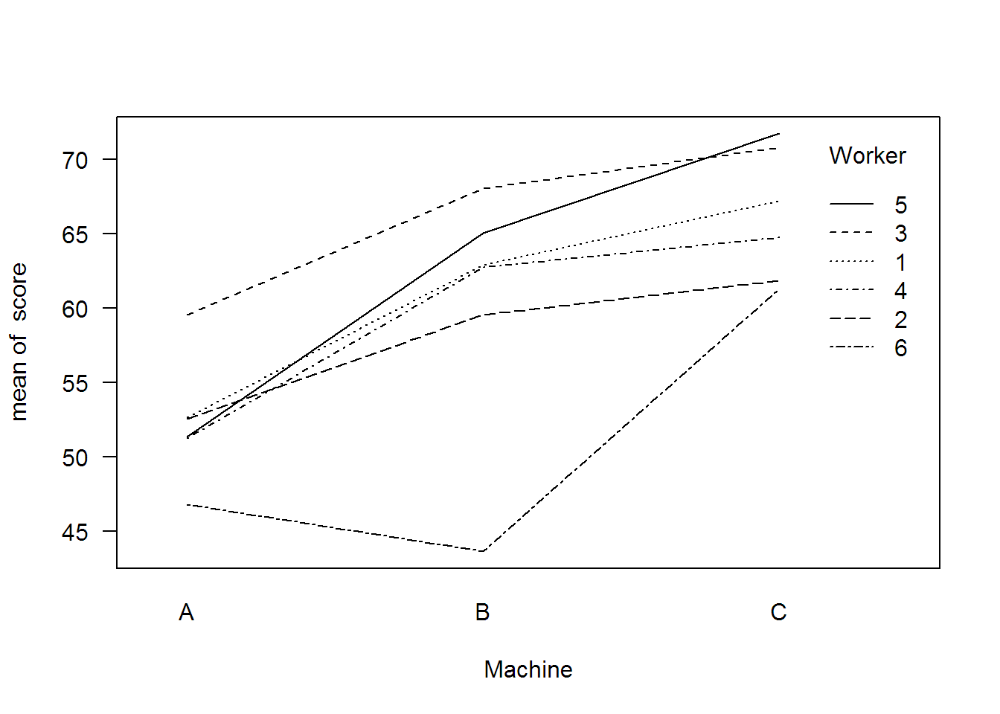
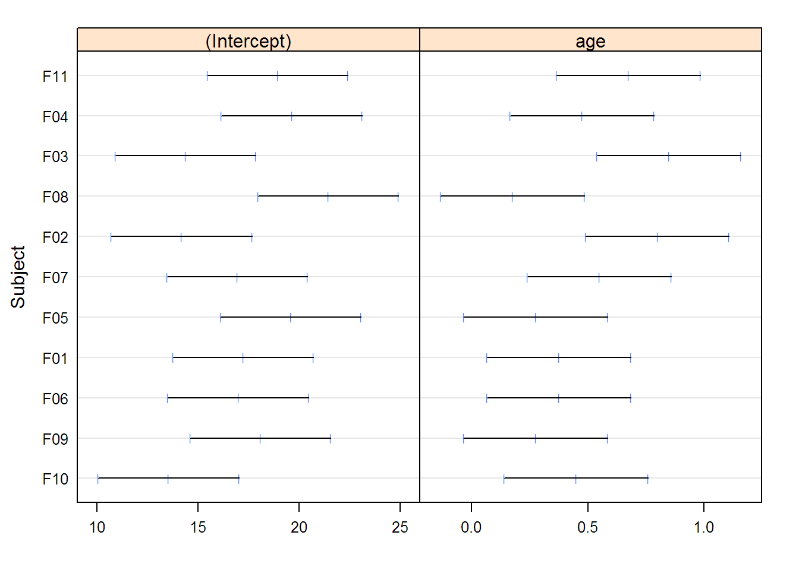
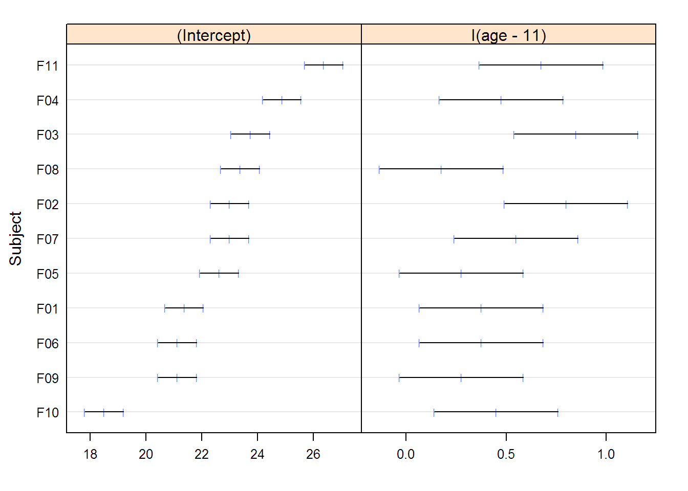
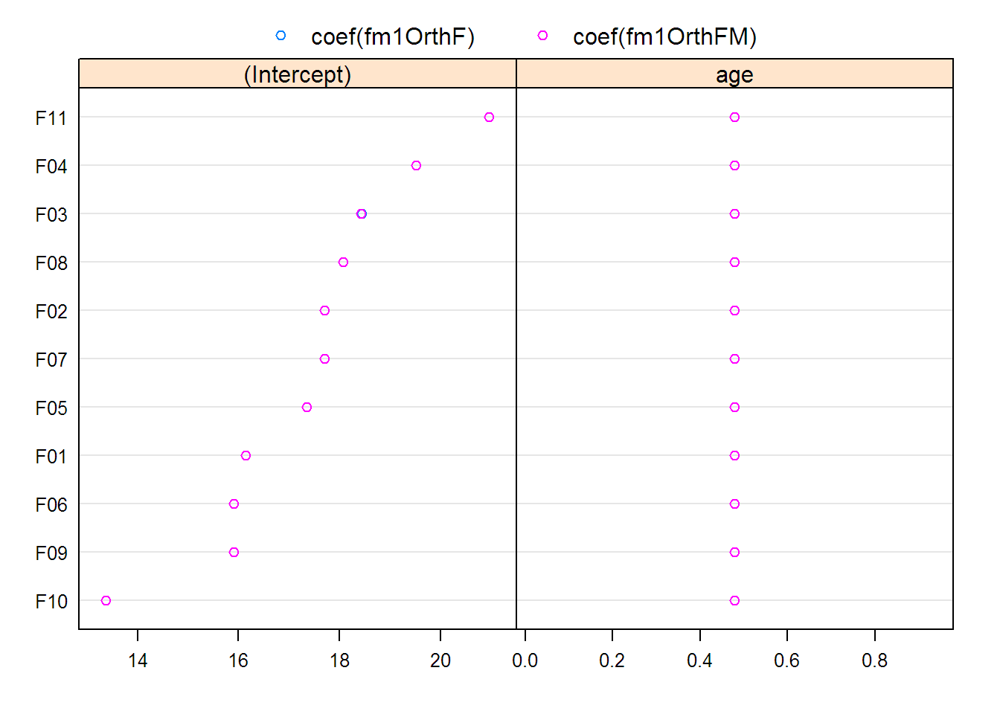
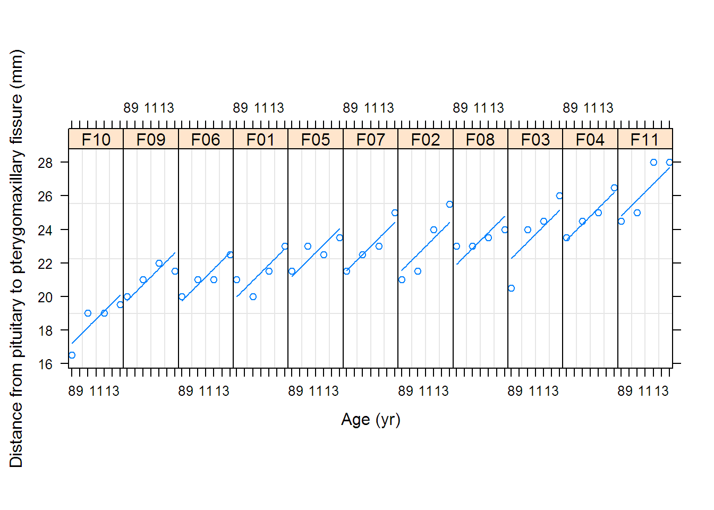
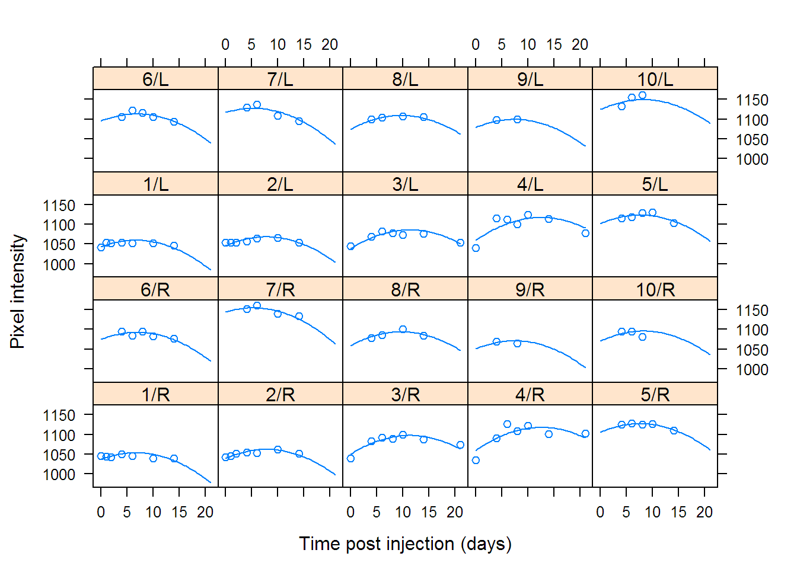
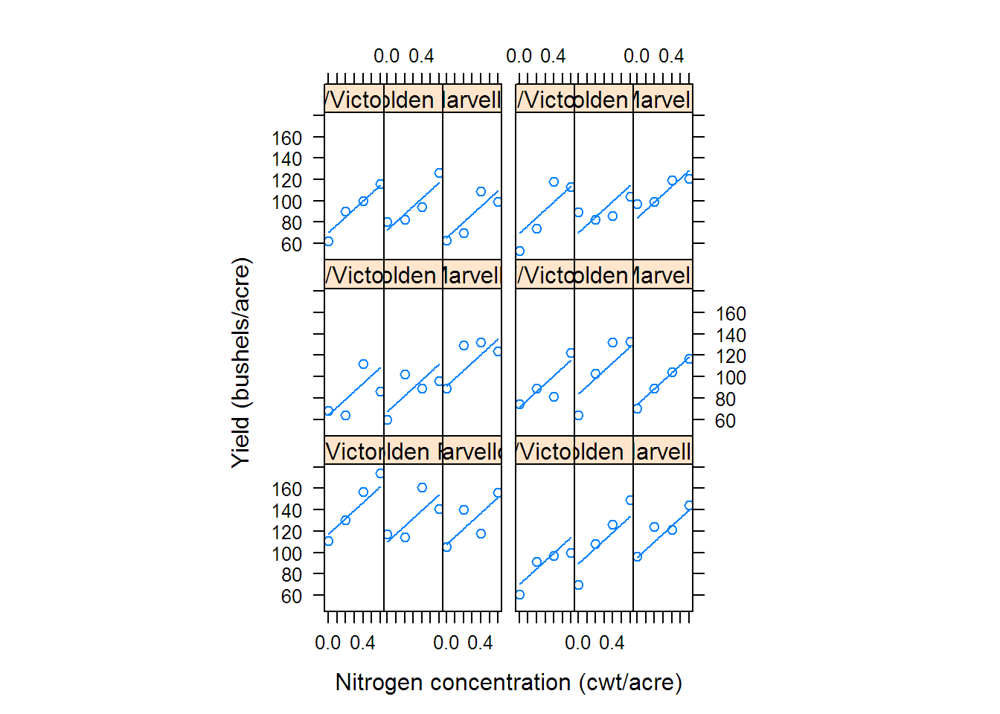

1 Chapter 1
#-*- R -*-
library(nlme)
#pdf(file = 'ch01.pdf')
options( width = 65, digits = 5 )
options( contrasts = c(unordered = "contr.helmert", ordered = "contr.poly") )
# Chapter 1 Linear Mixed-Effects Models: Basic Concepts and Examples
# 1.1 A Simple Example of Random Effects
Rail## Grouped Data: travel ~ 1 | Rail
## Rail travel
## 1 1 55
## 2 1 53
## 3 1 54
## 4 2 26
## 5 2 37
## 6 2 32
## 7 3 78
## 8 3 91
## 9 3 85
## 10 4 92
## 11 4 100
## 12 4 96
## 13 5 49
## 14 5 51
## 15 5 50
## 16 6 80
## 17 6 85
## 18 6 83##
## Call:
## lm(formula = travel ~ 1, data = Rail)
##
## Coefficients:
## (Intercept)
## 66.5##
## Call:
## lm(formula = travel ~ Rail - 1, data = Rail)
##
## Coefficients:
## Rail2 Rail5 Rail1 Rail6 Rail3 Rail4
## 31.7 50.0 54.0 82.7 84.7 96.0## Linear mixed-effects model fit by REML
## Data: Rail
## AIC BIC logLik
## 128.18 130.68 -61.089
##
## Random effects:
## Formula: ~1 | Rail
## (Intercept) Residual
## StdDev: 24.805 4.0208
##
## Fixed effects: travel ~ 1
## Value Std.Error DF t-value p-value
## (Intercept) 66.5 10.171 12 6.5382 0
##
## Standardized Within-Group Residuals:
## Min Q1 Med Q3 Max
## -1.618827 -0.282177 0.035693 0.219558 1.614377
##
## Number of Observations: 18
## Number of Groups: 6## Linear mixed-effects model fit by maximum likelihood
## Data: Rail
## AIC BIC logLik
## 134.56 137.23 -64.28
##
## Random effects:
## Formula: ~1 | Rail
## (Intercept) Residual
## StdDev: 22.624 4.0208
##
## Fixed effects: travel ~ 1
## Value Std.Error DF t-value p-value
## (Intercept) 66.5 9.554 12 6.9604 0
##
## Standardized Within-Group Residuals:
## Min Q1 Med Q3 Max
## -1.610981 -0.288870 0.034542 0.213728 1.622223
##
## Number of Observations: 18
## Number of Groups: 6
## Approximate 95% confidence intervals
##
## Fixed effects:
## lower est. upper
## (Intercept) 44.339 66.5 88.661
## attr(,"label")
## [1] "Fixed effects:"
##
## Random Effects:
## Level: Rail
## lower est. upper
## sd((Intercept)) 13.274 24.805 46.353
##
## Within-group standard error:
## lower est. upper
## 2.6950 4.0208 5.9987## numDF denDF F-value p-value
## (Intercept) 1 12 42.748 <.0001
## [,1] [,2] [,3]
## T1 -1 -1 -1
## T2 1 -1 -1
## T3 0 2 -1
## T4 0 0 3ergoStool1 <- ergoStool[ ergoStool$Subject == "1", ]
model.matrix( effort ~ Type, ergoStool1 ) # X matrix for Subject 1## (Intercept) Type1 Type2 Type3
## 1 1 -1 -1 -1
## 2 1 1 -1 -1
## 3 1 0 2 -1
## 4 1 0 0 3
## attr(,"assign")
## [1] 0 1 1 1
## attr(,"contrasts")
## attr(,"contrasts")$Type
## [1] "contr.helmert"## Linear mixed-effects model fit by REML
## Data: ergoStool
## AIC BIC logLik
## 139.49 148.28 -63.743
##
## Random effects:
## Formula: ~1 | Subject
## (Intercept) Residual
## StdDev: 1.3325 1.1003
##
## Fixed effects: effort ~ Type
## Value Std.Error DF t-value p-value
## (Intercept) 10.2500 0.48052 24 21.3309 0.0000
## Type1 1.9444 0.25934 24 7.4976 0.0000
## Type2 0.0926 0.14973 24 0.6184 0.5421
## Type3 -0.3426 0.10588 24 -3.2358 0.0035
## Correlation:
## (Intr) Type1 Type2
## Type1 0
## Type2 0 0
## Type3 0 0 0
##
## Standardized Within-Group Residuals:
## Min Q1 Med Q3 Max
## -1.802003 -0.643166 0.057831 0.700997 1.631421
##
## Number of Observations: 36
## Number of Groups: 9## numDF denDF F-value p-value
## (Intercept) 1 24 455.01 <.0001
## Type 3 24 22.36 <.0001options( contrasts = c( factor = "contr.treatment",
ordered = "contr.poly" ) )
contrasts( ergoStool$Type )## T2 T3 T4
## T1 0 0 0
## T2 1 0 0
## T3 0 1 0
## T4 0 0 1## Linear mixed-effects model fit by REML
## Data: ergoStool
## AIC BIC logLik
## 133.13 141.93 -60.565
##
## Random effects:
## Formula: ~1 | Subject
## (Intercept) Residual
## StdDev: 1.3325 1.1003
##
## Fixed effects: effort ~ Type
## Value Std.Error DF t-value p-value
## (Intercept) 8.5556 0.57601 24 14.8531 0.0000
## TypeT2 3.8889 0.51868 24 7.4976 0.0000
## TypeT3 2.2222 0.51868 24 4.2843 0.0003
## TypeT4 0.6667 0.51868 24 1.2853 0.2110
## Correlation:
## (Intr) TypeT2 TypeT3
## TypeT2 -0.45
## TypeT3 -0.45 0.50
## TypeT4 -0.45 0.50 0.50
##
## Standardized Within-Group Residuals:
## Min Q1 Med Q3 Max
## -1.802003 -0.643166 0.057831 0.700997 1.631421
##
## Number of Observations: 36
## Number of Groups: 9## numDF denDF F-value p-value
## (Intercept) 1 24 455.01 <.0001
## Type 3 24 22.36 <.0001## TypeT1 TypeT2 TypeT3 TypeT4
## 1 1 0 0 0
## 2 0 1 0 0
## 3 0 0 1 0
## 4 0 0 0 1
## attr(,"assign")
## [1] 1 1 1 1
## attr(,"contrasts")
## attr(,"contrasts")$Type
## [1] "contr.treatment"## Linear mixed-effects model fit by REML
## Data: ergoStool
## AIC BIC logLik
## 133.13 141.93 -60.565
##
## Random effects:
## Formula: ~1 | Subject
## (Intercept) Residual
## StdDev: 1.3325 1.1003
##
## Fixed effects: effort ~ Type - 1
## Value Std.Error DF t-value p-value
## TypeT1 8.5556 0.57601 24 14.853 0
## TypeT2 12.4444 0.57601 24 21.605 0
## TypeT3 10.7778 0.57601 24 18.711 0
## TypeT4 9.2222 0.57601 24 16.011 0
## Correlation:
## TypeT1 TypeT2 TypeT3
## TypeT2 0.595
## TypeT3 0.595 0.595
## TypeT4 0.595 0.595 0.595
##
## Standardized Within-Group Residuals:
## Min Q1 Med Q3 Max
## -1.802003 -0.643166 0.057831 0.700997 1.631421
##
## Number of Observations: 36
## Number of Groups: 9## numDF denDF F-value p-value
## Type 4 24 130.52 <.0001## Approximate 95% confidence intervals
##
## Fixed effects:
## lower est. upper
## (Intercept) 9.25825 10.250000 11.24175
## Type1 1.40919 1.944444 2.47970
## Type2 -0.21644 0.092593 0.40162
## Type3 -0.56111 -0.342593 -0.12408
## attr(,"label")
## [1] "Fixed effects:"
##
## Random Effects:
## Level: Subject
## lower est. upper
## sd((Intercept)) 0.74947 1.3325 2.369
##
## Within-group standard error:
## lower est. upper
## 0.82946 1.10029 1.45957plot( fm1Stool, # produces Figure 1.8
form = resid(., type = "p") ~ fitted(.) | Subject,
abline = 0 )
# 1.3 Mixed-effects Models for Replicated, Blocked Designs
with(Machines, interaction.plot( Machine, Worker, score, las = 1)) # Figure 1.10
## Linear mixed-effects model fit by REML
## Data: Machines
## Log-restricted-likelihood: -143.44
## Fixed: score ~ Machine
## (Intercept) MachineB MachineC
## 52.3556 7.9667 13.9167
##
## Random effects:
## Formula: ~1 | Worker
## (Intercept) Residual
## StdDev: 5.1466 3.1616
##
## Number of Observations: 54
## Number of Groups: 6## Linear mixed-effects model fit by REML
## Data: Machines
## Log-restricted-likelihood: -107.84
## Fixed: score ~ Machine
## (Intercept) MachineB MachineC
## 52.3556 7.9667 13.9167
##
## Random effects:
## Formula: ~1 | Worker
## (Intercept)
## StdDev: 4.781
##
## Formula: ~1 | Machine %in% Worker
## (Intercept) Residual
## StdDev: 3.7295 0.96158
##
## Number of Observations: 54
## Number of Groups:
## Worker Machine %in% Worker
## 6 18## Model df AIC BIC logLik Test L.Ratio p-value
## fm1Machine 1 5 296.88 306.54 -143.44
## fm2Machine 2 6 227.69 239.28 -107.84 1 vs 2 71.191 <.0001 ## delete selected rows from the Machines data
MachinesUnbal <- Machines[ -c(2,3,6,8,9,12,19,20,27,33), ]
## check that the result is indeed unbalanced
table(MachinesUnbal$Machine, MachinesUnbal$Worker)##
## 6 2 4 1 3 5
## A 3 2 2 1 1 3
## B 3 3 3 1 2 2
## C 3 3 3 3 3 3fm1MachinesU <- lme( score ~ Machine, data = MachinesUnbal,
random = ~ 1 | Worker/Machine )
fm1MachinesU## Linear mixed-effects model fit by REML
## Data: MachinesUnbal
## Log-restricted-likelihood: -90.936
## Fixed: score ~ Machine
## (Intercept) MachineB MachineC
## 52.3540 7.9624 13.9182
##
## Random effects:
## Formula: ~1 | Worker
## (Intercept)
## StdDev: 4.7387
##
## Formula: ~1 | Machine %in% Worker
## (Intercept) Residual
## StdDev: 3.7728 0.9332
##
## Number of Observations: 44
## Number of Groups:
## Worker Machine %in% Worker
## 6 18## Approximate 95% confidence intervals
##
## Fixed effects:
## lower est. upper
## (Intercept) 47.2345 52.3540 57.474
## MachineB 3.0278 7.9624 12.897
## MachineC 8.9955 13.9182 18.841
## attr(,"label")
## [1] "Fixed effects:"
##
## Random Effects:
## Level: Worker
## lower est. upper
## sd((Intercept)) 2.2163 4.7387 10.132
## Level: Machine
## lower est. upper
## sd((Intercept)) 2.4092 3.7728 5.9083
##
## Within-group standard error:
## lower est. upper
## 0.71136 0.93320 1.22424fm4Stool <- lme( effort ~ Type, ergoStool, ~ 1 | Subject/Type )
if (interactive()) intervals( fm4Stool )
(fm1Stool$sigma)^2## [1] 1.2106## [1] 0.84554Machine1 <- Machines[ Machines$Worker == "1", ]
model.matrix( score ~ Machine, Machine1 ) # fixed-effects X_i## (Intercept) MachineB MachineC
## 1 1 0 0
## 2 1 0 0
## 3 1 0 0
## 19 1 1 0
## 20 1 1 0
## 21 1 1 0
## 37 1 0 1
## 38 1 0 1
## 39 1 0 1
## attr(,"assign")
## [1] 0 1 1
## attr(,"contrasts")
## attr(,"contrasts")$Machine
## [1] "contr.treatment"## MachineA MachineB MachineC
## 1 1 0 0
## 2 1 0 0
## 3 1 0 0
## 19 0 1 0
## 20 0 1 0
## 21 0 1 0
## 37 0 0 1
## 38 0 0 1
## 39 0 0 1
## attr(,"assign")
## [1] 1 1 1
## attr(,"contrasts")
## attr(,"contrasts")$Machine
## [1] "contr.treatment"## Linear mixed-effects model fit by REML
## Data: Machines
## AIC BIC logLik
## 228.31 247.63 -104.16
##
## Random effects:
## Formula: ~Machine - 1 | Worker
## Structure: General positive-definite, Log-Cholesky parametrization
## StdDev Corr
## MachineA 4.07928 MachnA MachnB
## MachineB 8.62529 0.803
## MachineC 4.38948 0.623 0.771
## Residual 0.96158
##
## Fixed effects: score ~ Machine
## Value Std.Error DF t-value p-value
## (Intercept) 52.356 1.6807 46 31.1508 0.0000
## MachineB 7.967 2.4209 46 3.2909 0.0019
## MachineC 13.917 1.5401 46 9.0362 0.0000
## Correlation:
## (Intr) MachnB
## MachineB 0.463
## MachineC -0.374 0.301
##
## Standardized Within-Group Residuals:
## Min Q1 Med Q3 Max
## -2.393540 -0.513776 0.026908 0.472455 2.533387
##
## Number of Observations: 54
## Number of Groups: 6## Model df AIC BIC logLik Test L.Ratio p-value
## fm1Machine 1 5 296.88 306.54 -143.44
## fm2Machine 2 6 227.69 239.28 -107.84 1 vs 2 71.191 <.0001
## fm3Machine 3 10 228.31 247.63 -104.16 2 vs 3 7.376 0.1173## [1] "distance" "age" "Subject" "Sex"## [1] "Male" "Female"OrthoFem <- Orthodont[ Orthodont$Sex == "Female", ]
fm1OrthF.lis <- lmList( distance ~ age, data = OrthoFem )
coef( fm1OrthF.lis )## (Intercept) age
## F10 13.55 0.450
## F09 18.10 0.275
## F06 17.00 0.375
## F01 17.25 0.375
## F05 19.60 0.275
## F07 16.95 0.550
## F02 14.20 0.800
## F08 21.45 0.175
## F03 14.40 0.850
## F04 19.65 0.475
## F11 18.95 0.675## , , (Intercept)
##
## lower est. upper
## F10 10.071 13.55 17.029
## F09 14.621 18.10 21.579
## F06 13.521 17.00 20.479
## F01 13.771 17.25 20.729
## F05 16.121 19.60 23.079
## F07 13.471 16.95 20.429
## F02 10.721 14.20 17.679
## F08 17.971 21.45 24.929
## F03 10.921 14.40 17.879
## F04 16.171 19.65 23.129
## F11 15.471 18.95 22.429
##
## , , age
##
## lower est. upper
## F10 0.1401 0.450 0.7599
## F09 -0.0349 0.275 0.5849
## F06 0.0651 0.375 0.6849
## F01 0.0651 0.375 0.6849
## F05 -0.0349 0.275 0.5849
## F07 0.2401 0.550 0.8599
## F02 0.4901 0.800 1.1099
## F08 -0.1349 0.175 0.4849
## F03 0.5401 0.850 1.1599
## F04 0.1651 0.475 0.7849
## F11 0.3651 0.675 0.9849
fm2OrthF.lis <- update( fm1OrthF.lis, distance ~ I( age - 11 ) )
plot( intervals( fm2OrthF.lis ) ) # produces Figure 1.13
## Linear mixed-effects model fit by REML
## Data: OrthoFem
## AIC BIC logLik
## 149.22 156.17 -70.609
##
## Random effects:
## Formula: ~1 | Subject
## (Intercept) Residual
## StdDev: 2.0685 0.78003
##
## Fixed effects: distance ~ age
## Value Std.Error DF t-value p-value
## (Intercept) 17.3727 0.85874 32 20.2304 0
## age 0.4795 0.05259 32 9.1186 0
## Correlation:
## (Intr)
## age -0.674
##
## Standardized Within-Group Residuals:
## Min Q1 Med Q3 Max
## -2.27365 -0.70902 0.17282 0.41221 1.63252
##
## Number of Observations: 44
## Number of Groups: 11## Linear mixed-effects model fit by maximum likelihood
## Data: OrthoFem
## AIC BIC logLik
## 146.03 153.17 -69.015
##
## Random effects:
## Formula: ~1 | Subject
## (Intercept) Residual
## StdDev: 1.9699 0.76812
##
## Fixed effects: distance ~ age
## Value Std.Error DF t-value p-value
## (Intercept) 17.3727 0.85063 32 20.4234 0
## age 0.4795 0.05301 32 9.0471 0
## Correlation:
## (Intr)
## age -0.685
##
## Standardized Within-Group Residuals:
## Min Q1 Med Q3 Max
## -2.30562 -0.71924 0.17636 0.42580 1.66894
##
## Number of Observations: 44
## Number of Groups: 11## Model df AIC BIC logLik Test L.Ratio p-value
## fm1OrthF 1 4 149.22 156.17 -70.609
## fm2OrthF 2 6 149.43 159.85 -68.714 1 vs 2 3.7896 0.1503## (Intercept)
## F10 -4.005329
## F09 -1.470449
## F06 -1.470449
## F01 -1.229032
## F05 -0.021947
## F07 0.340179
## F02 0.340179
## F08 0.702304
## F03 1.064430
## F04 2.150807
## F11 3.599309## (Intercept)
## F10 -3.995835
## F09 -1.466964
## F06 -1.466964
## F01 -1.226119
## F05 -0.021895
## F07 0.339372
## F02 0.339372
## F08 0.700640
## F03 1.061907
## F04 2.145709
## F11 3.590778## (Intercept) age
## F10 13.367 0.47955
## F09 15.902 0.47955
## F06 15.902 0.47955
## F01 16.144 0.47955
## F05 17.351 0.47955
## F07 17.713 0.47955
## F02 17.713 0.47955
## F08 18.075 0.47955
## F03 18.437 0.47955
## F04 19.524 0.47955
## F11 20.972 0.47955

# 1.5 Models for Nested Classification Factors
fm1Pixel <- lme( pixel ~ day + I(day^2), data = Pixel,
random = list( Dog = ~ day, Side = ~ 1 ) )
intervals( fm1Pixel )## Approximate 95% confidence intervals
##
## Fixed effects:
## lower est. upper
## (Intercept) 1053.0968 1073.33914 1093.5814
## day 4.3797 6.12960 7.8795
## I(day^2) -0.4349 -0.36735 -0.2998
## attr(,"label")
## [1] "Fixed effects:"
##
## Random Effects:
## Level: Dog
## lower est. upper
## sd((Intercept)) 15.92962 28.36990 50.52546
## sd(day) 1.08150 1.84375 3.14324
## cor((Intercept),day) -0.89435 -0.55472 0.19053
## Level: Side
## lower est. upper
## sd((Intercept)) 10.417 16.824 27.172
##
## Within-group standard error:
## lower est. upper
## 7.6345 8.9896 10.5852
## Variance StdDev Corr
## Dog = pdLogChol(day)
## (Intercept) 804.8514 28.3699 (Intr)
## day 3.3994 1.8438 -0.555
## Side = pdLogChol(1)
## (Intercept) 283.0572 16.8243
## Residual 80.8130 8.9896## Linear mixed-effects model fit by REML
## Data: Pixel
## AIC BIC logLik
## 841.21 861.97 -412.61
##
## Random effects:
## Formula: ~day | Dog
## Structure: General positive-definite, Log-Cholesky parametrization
## StdDev Corr
## (Intercept) 28.3699 (Intr)
## day 1.8438 -0.555
##
## Formula: ~1 | Side %in% Dog
## (Intercept) Residual
## StdDev: 16.824 8.9896
##
## Fixed effects: pixel ~ day + I(day^2)
## Value Std.Error DF t-value p-value
## (Intercept) 1073.34 10.1717 80 105.522 0
## day 6.13 0.8793 80 6.971 0
## I(day^2) -0.37 0.0339 80 -10.822 0
## Correlation:
## (Intr) day
## day -0.517
## I(day^2) 0.186 -0.668
##
## Standardized Within-Group Residuals:
## Min Q1 Med Q3 Max
## -2.829057 -0.449181 0.025549 0.557216 2.751965
##
## Number of Observations: 102
## Number of Groups:
## Dog Side %in% Dog
## 10 20## Model df AIC BIC logLik Test L.Ratio p-value
## fm1Pixel 1 8 841.21 861.97 -412.61
## fm2Pixel 2 7 884.52 902.69 -435.26 1 vs 2 45.309 <.0001## Model df AIC BIC logLik Test L.Ratio p-value
## fm1Pixel 1 8 841.21 861.97 -412.61
## fm3Pixel 2 6 876.84 892.41 -432.42 1 vs 2 39.629 <.0001## Linear mixed-effects model fit by REML
## Data: Pixel
## AIC BIC logLik
## 835.85 859.12 -408.93
##
## Random effects:
## Formula: ~day | Dog
## Structure: General positive-definite, Log-Cholesky parametrization
## StdDev Corr
## (Intercept) 28.4636 (Intr)
## day 1.8438 -0.553
##
## Formula: ~1 | Side %in% Dog
## (Intercept) Residual
## StdDev: 16.507 8.9836
##
## Fixed effects: pixel ~ day + I(day^2) + Side
## Value Std.Error DF t-value p-value
## (Intercept) 1077.95 10.8627 80 99.234 0.0000
## day 6.13 0.8790 80 6.973 0.0000
## I(day^2) -0.37 0.0339 80 -10.829 0.0000
## SideR -9.22 7.6268 9 -1.209 0.2576
## Correlation:
## (Intr) day I(d^2)
## day -0.484
## I(day^2) 0.174 -0.667
## SideR -0.351 0.000 0.000
##
## Standardized Within-Group Residuals:
## Min Q1 Med Q3 Max
## -2.809825 -0.471334 0.026103 0.541154 2.774701
##
## Number of Observations: 102
## Number of Groups:
## Dog Side %in% Dog
## 10 20# 1.6 A Split-Plot Experiment
fm1Oats <- lme( yield ~ ordered(nitro) * Variety, data = Oats,
random = ~ 1 | Block/Variety )
anova( fm1Oats )## numDF denDF F-value p-value
## (Intercept) 1 45 245.143 <.0001
## ordered(nitro) 3 45 37.686 <.0001
## Variety 2 10 1.485 0.2724
## ordered(nitro):Variety 6 45 0.303 0.9322## numDF denDF F-value p-value
## (Intercept) 1 51 245.145 <.0001
## ordered(nitro) 3 51 41.053 <.0001
## Variety 2 10 1.485 0.2724## Linear mixed-effects model fit by REML
## Data: Oats
## AIC BIC logLik
## 587.46 607.16 -284.73
##
## Random effects:
## Formula: ~1 | Block
## (Intercept)
## StdDev: 14.645
##
## Formula: ~1 | Variety %in% Block
## (Intercept) Residual
## StdDev: 10.473 12.75
##
## Fixed effects: yield ~ ordered(nitro) + Variety
## Value Std.Error DF t-value p-value
## (Intercept) 104.500 7.7975 51 13.4017 0.0000
## ordered(nitro).L 32.945 3.0052 51 10.9627 0.0000
## ordered(nitro).Q -5.167 3.0052 51 -1.7193 0.0916
## ordered(nitro).C -0.447 3.0052 51 -0.1488 0.8823
## VarietyMarvellous 5.292 7.0789 10 0.7475 0.4720
## VarietyVictory -6.875 7.0789 10 -0.9712 0.3544
## Correlation:
## (Intr) or().L or().Q or().C VrtyMr
## ordered(nitro).L 0.000
## ordered(nitro).Q 0.000 0.000
## ordered(nitro).C 0.000 0.000 0.000
## VarietyMarvellous -0.454 0.000 0.000 0.000
## VarietyVictory -0.454 0.000 0.000 0.000 0.500
##
## Standardized Within-Group Residuals:
## Min Q1 Med Q3 Max
## -1.841341 -0.662797 -0.066943 0.638225 1.660668
##
## Number of Observations: 72
## Number of Groups:
## Block Variety %in% Block
## 6 18## Linear mixed-effects model fit by REML
## Data: Oats
## AIC BIC logLik
## 597.61 613.14 -291.8
##
## Random effects:
## Formula: ~1 | Block
## (Intercept)
## StdDev: 14.506
##
## Formula: ~1 | Variety %in% Block
## (Intercept) Residual
## StdDev: 11.039 12.75
##
## Fixed effects: yield ~ ordered(nitro)
## Value Std.Error DF t-value p-value
## (Intercept) 103.972 6.6407 51 15.6569 0.0000
## ordered(nitro).L 32.945 3.0052 51 10.9627 0.0000
## ordered(nitro).Q -5.167 3.0052 51 -1.7193 0.0916
## ordered(nitro).C -0.447 3.0052 51 -0.1488 0.8823
## Correlation:
## (Intr) or().L or().Q
## ordered(nitro).L 0
## ordered(nitro).Q 0 0
## ordered(nitro).C 0 0 0
##
## Standardized Within-Group Residuals:
## Min Q1 Med Q3 Max
## -1.781556 -0.611689 0.022224 0.622007 1.681382
##
## Number of Observations: 72
## Number of Groups:
## Block Variety %in% Block
## 6 18## Linear mixed-effects model fit by REML
## Data: Oats
## AIC BIC logLik
## 603.04 614.28 -296.52
##
## Random effects:
## Formula: ~1 | Block
## (Intercept)
## StdDev: 14.506
##
## Formula: ~1 | Variety %in% Block
## (Intercept) Residual
## StdDev: 11.005 12.867
##
## Fixed effects: yield ~ nitro
## Value Std.Error DF t-value p-value
## (Intercept) 81.872 6.9453 53 11.788 0
## nitro 73.667 6.7815 53 10.863 0
## Correlation:
## (Intr)
## nitro -0.293
##
## Standardized Within-Group Residuals:
## Min Q1 Med Q3 Max
## -1.743808 -0.664752 0.017104 0.542988 1.802989
##
## Number of Observations: 72
## Number of Groups:
## Block Variety %in% Block
## 6 18## Variance StdDev
## Block = pdLogChol(1)
## (Intercept) 210.42 14.506
## Variety = pdLogChol(1)
## (Intercept) 121.10 11.005
## Residual 165.56 12.867## Approximate 95% confidence intervals
##
## Fixed effects:
## lower est. upper
## (Intercept) 67.942 81.872 95.803
## nitro 60.065 73.667 87.269
## attr(,"label")
## [1] "Fixed effects:"
##
## Random Effects:
## Level: Block
## lower est. upper
## sd((Intercept)) 6.6089 14.506 31.839
## Level: Variety
## lower est. upper
## sd((Intercept)) 6.4081 11.005 18.898
##
## Within-group standard error:
## lower est. upper
## 10.637 12.867 15.565plot(augPred(fm4Oats), aspect = 2.5, layout = c(6, 3),
between = list(x = c(0, 0, 0.5, 0, 0))) # produces Figure 1.21
## user system elapsed
## 3.43 0.68 5.24